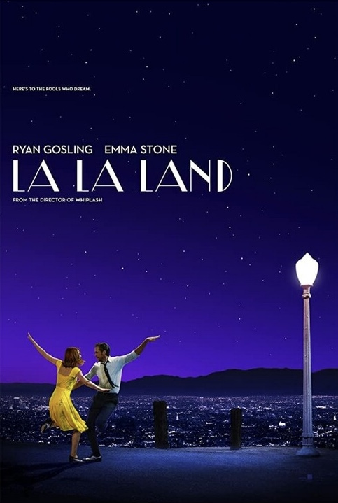

La La Land

Mamma Mia! Here We Go Again
The Hunger Games
- Why "La La Land"?
- Ryan Gosling and Emma Stone are two of my favorite actors.
- I find the story to be very inspirational and emotive.
- I also really enjoy the cinematics, music, and setting of the film.
- Why "Mamma Mia! Here We Go Again"?
- This film was filmed in Greece and the scenery is amazing.
- This film's soundtrack is so lively and upbeat, which is the type of music I like.
- I felt that every actor portrayed their characters in such great ways.
- Why "The Hunger Games"?
- I enjoy films that are based on books because it's interesting to see how they compare and contrast.
- The dystopian genre allows you to use your imagination.
- The story line is very intricate and interconnected, which fills the movie with action.